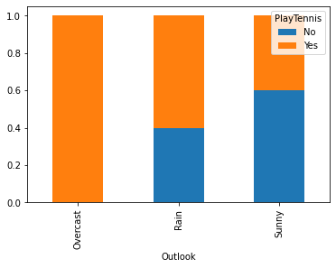
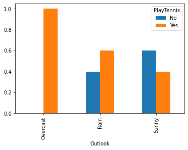

import pandas as pd
import numpy as npPandas tips
Pandas groupby
Dataset creation
# Create a DataFrame for whether or not a person plays tennis.
# It has discrete features and 14 rows.
df = pd.DataFrame({
'Outlook': ['Sunny', 'Sunny', 'Overcast', 'Rain', 'Rain', 'Rain', 'Overcast', 'Sunny', 'Sunny', 'Rain', 'Sunny', 'Overcast', 'Overcast', 'Rain'],
'Temperature': ['Hot', 'Hot', 'Hot', 'Mild', 'Cool', 'Cool', 'Cool', 'Mild', 'Cool', 'Mild', 'Mild', 'Mild', 'Hot', 'Mild'],
'Humidity': ['High', 'High', 'High', 'High', 'Normal', 'Normal', 'Normal', 'High', 'Normal', 'Normal', 'Normal', 'High', 'Normal', 'High'],
'Wind': ['Weak', 'Strong', 'Weak', 'Weak', 'Weak', 'Strong', 'Strong', 'Weak', 'Weak', 'Weak', 'Strong', 'Strong', 'Weak', 'Strong'],
'PlayTennis': ['No', 'No', 'Yes', 'Yes', 'Yes', 'No', 'Yes', 'No', 'Yes', 'Yes', 'Yes', 'Yes', 'Yes', 'No']
})Counting values of outcome variable (useful for calculating entropy)
ser = df['PlayTennis'].value_counts()
serYes 9
No 5
Name: PlayTennis, dtype: int64Using cross tab to quickly capture the relationship between two variables
df_out = pd.crosstab(df['Outlook'], df['PlayTennis'])
df_out| PlayTennis | No | Yes |
|---|---|---|
| Outlook | ||
| Overcast | 0 | 4 |
| Rain | 2 | 3 |
| Sunny | 3 | 2 |
df_out.index, df_out.columns(Index(['Overcast', 'Rain', 'Sunny'], dtype='object', name='Outlook'),
Index(['No', 'Yes'], dtype='object', name='PlayTennis'))e = df_out.sum(axis=1)
eOutlook
Overcast 4
Rain 5
Sunny 5
dtype: int64# Find the fraction of each row that is a 'Yes' and 'No' for PlayTennis
df_out['Yes'] = df_out['Yes'] / e
df_out['No'] = df_out['No'] / e
df_out| PlayTennis | No | Yes |
|---|---|---|
| Outlook | ||
| Overcast | 0.0 | 1.0 |
| Rain | 0.4 | 0.6 |
| Sunny | 0.6 | 0.4 |
More efficient cross tabulation (using normalize)
pd.crosstab(df['Outlook'], df['PlayTennis'], normalize='index')| PlayTennis | No | Yes |
|---|---|---|
| Outlook | ||
| Overcast | 0.0 | 1.0 |
| Rain | 0.4 | 0.6 |
| Sunny | 0.6 | 0.4 |
Using pd.groupby()
df.groupby(["Outlook"]).groups{'Overcast': [2, 6, 11, 12], 'Rain': [3, 4, 5, 9, 13], 'Sunny': [0, 1, 7, 8, 10]}df.groupby(["Outlook"]).get_group("Sunny")| Outlook | Temperature | Humidity | Wind | PlayTennis | |
|---|---|---|---|---|---|
| 0 | Sunny | Hot | High | Weak | No |
| 1 | Sunny | Hot | High | Strong | No |
| 7 | Sunny | Mild | High | Weak | No |
| 8 | Sunny | Cool | Normal | Weak | Yes |
| 10 | Sunny | Mild | Normal | Strong | Yes |
df.groupby(["Outlook"]).get_group("Sunny")["PlayTennis"]0 No
1 No
7 No
8 Yes
10 Yes
Name: PlayTennis, dtype: objectdf.groupby(["Outlook"]).get_group("Sunny")["PlayTennis"].value_counts()No 3
Yes 2
Name: PlayTennis, dtype: int64df.groupby(["Outlook", "PlayTennis"]).groups{('Overcast', 'Yes'): [2, 6, 11, 12], ('Rain', 'No'): [5, 13], ('Rain', 'Yes'): [3, 4, 9], ('Sunny', 'No'): [0, 1, 7], ('Sunny', 'Yes'): [8, 10]}df.groupby(["Outlook", "PlayTennis"]).get_group(("Sunny", "Yes"))| Outlook | Temperature | Humidity | Wind | PlayTennis | |
|---|---|---|---|---|---|
| 8 | Sunny | Cool | Normal | Weak | Yes |
| 10 | Sunny | Mild | Normal | Strong | Yes |
df.groupby(["Outlook", "PlayTennis"]).size()Outlook PlayTennis
Overcast Yes 4
Rain No 2
Yes 3
Sunny No 3
Yes 2
dtype: int64df.groupby(["Outlook", "PlayTennis"]).size().indexMultiIndex([('Overcast', 'Yes'),
( 'Rain', 'No'),
( 'Rain', 'Yes'),
( 'Sunny', 'No'),
( 'Sunny', 'Yes')],
names=['Outlook', 'PlayTennis'])df.groupby(["Outlook", "PlayTennis"]).size().unstack()| PlayTennis | No | Yes |
|---|---|---|
| Outlook | ||
| Overcast | NaN | 4.0 |
| Rain | 2.0 | 3.0 |
| Sunny | 3.0 | 2.0 |
df.groupby(["Outlook", "PlayTennis"]).size().unstack(fill_value=0)| PlayTennis | No | Yes |
|---|---|---|
| Outlook | ||
| Overcast | 0 | 4 |
| Rain | 2 | 3 |
| Sunny | 3 | 2 |
Using pd.pivot_table
pivot_table = df.pivot_table(index='Outlook', columns='PlayTennis', aggfunc='size', fill_value=0)
pivot_table| PlayTennis | No | Yes |
|---|---|---|
| Outlook | ||
| Overcast | 0 | 4 |
| Rain | 2 | 3 |
| Sunny | 3 | 2 |
df_out.plot(kind='bar', stacked=True)<AxesSubplot:xlabel='Outlook'>
df_out.plot(kind='bar', stacked=False)<AxesSubplot:xlabel='Outlook'>